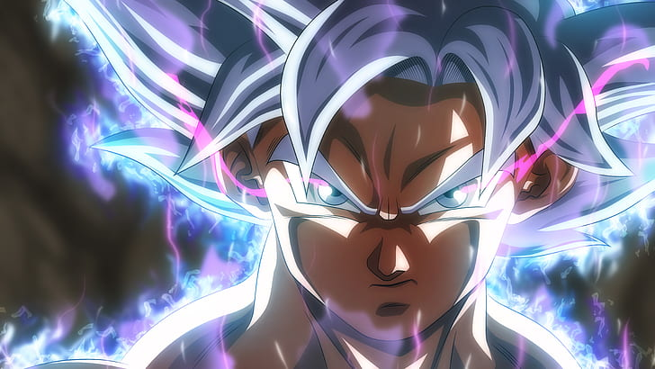
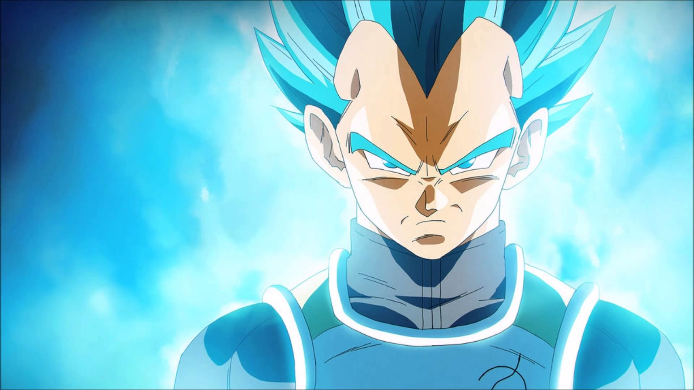
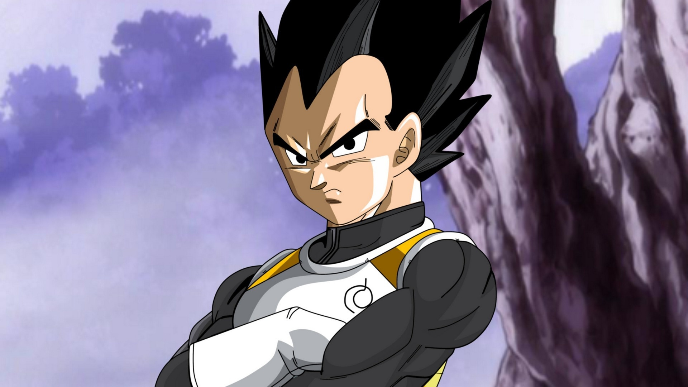
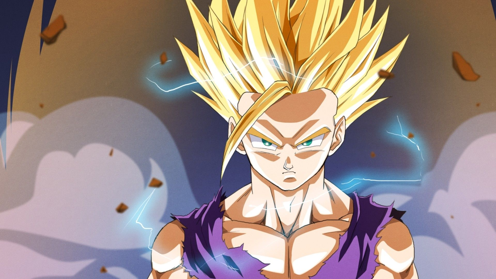

Dragon Ball
A história de Dragon Ball começa com Son Goku, um garoto ingênuo e puro com cauda de macaco e uma força extraordinária. Ele mora sozinho após a morte de seu avô adotivo em uma montanha chamada Paozu. Um dia ele conhece Bulma, uma garota muito inteligente da cidade, que estava em busca das sete Esferas do Dragão.
Persuadido, Goku concorda em ajudar Bulma a encontrar as Esferas. Os dois partem em uma longa jornada, durante a qual eles fazem muitos amigos. Depois, Goku passa por um treinamento com Kame-Sennin, onde o garoto Kuririn se torna seu parceiro, e participa de vários torneios mundiais de artes marciais.
No curso de seu crescimento e seu desenvolvimento, ele enfrenta inúmeros inimigos, incluindo Piccolo, que depois se torna seu aliado. Quando jovem adulto, Goku se casa com Chi-Chi, cumprindo uma promessa feita por ele quando ambos eram crianças, e possui seu primeiro filho chamado Gohan.
Goku acaba descobrindo que pertence à raça extraterrestre Saiyajin, e que foi enviado à Terra quando criança para conquistar o planeta. Pouco depois de sua chegada, no entanto, ele tinha sofrido um ferimento na cabeça, perdendo desta forma a memória da missão e sua natureza agressiva. No entanto, o jovem decide continuar a defender seu planeta adotado do ataque de inimigos cada vez mais difíceis, incluindo o príncipe dos sayajins Vegeta, que depois também se torna seu aliado. Desta forma, juntamente com sua família e seus amigos, Goku luta contra inimigos como Freeza, Cell, Boo, entre outros, se tornando o protetor da Terra e todo o universo

Principais Personagens
-
Goku
Son Goku (孫悟空 Son Gokū?, mais conhecido apenas como Goku), cujo nome de nascimento é Kakarotto (カカロット Kakarotto?), é o protagonista da franquia Dragon Ball, criada por Akira Toriyama. Sua primeira aparição ocorreu no primeiro capítulo do mangá Dragon Ball, intitulado Bulma e Son Goku (em japonês: ブルマと孫悟空 Buruma to Son Gokū?), publicado na revista Weekly Shōnen Jump em 3 de dezembro de 1984. Goku é inspirado num personagem com o mesmo nome, 孫 悟空 (lê-se Sun Wukong em mandarim e Son Goku em japonês), personagem principal do romance chinês Jornada ao Oeste. Porém, Toriyama mudou algumas de suas características para ser mais original. Goku é apresentado como um menino estranho, com rabo de macaco e força sobre-humana. Conforme a história se desenrola, é revelado que ele descende de uma raça fictícia chamada Saiyajins, uma das raças mais poderosas do universo.
Sendo o protagonista da franquia, Son Goku aparece em todos os mangás, animes, filmes, OVAs e jogos eletrônicos da série. Além de ser alvo de paródias (como em Neko Majin Z, one-shots criados pelo próprio Toriyama), Goku já fez várias aparições em eventos televisivos e em outras séries de mangás, como Dr. Slump (também criada por Toriyama). Graças à grande popularidade de Dragon Ball e Dragon Ball Z e com críticas a seu respeito extremamente positivas, Goku se tornou não só um ícone japonês e da cultura popular mundial, como também um dos maiores personagens de anime e mangá de todos os tempos.
 -
Vegeta
Vegeta (ベジータ Bejīta?) é um personagem fictício da franquia Dragon Ball criado por Akira Toriyama. As primeiras aparições de Vegeta na franquia foram no mangá Sayōnara Son Gokū (さようなら孫悟空 Adeus Son Goku?), publicado originalmente em 1988, e no quinto episódio do anime Dragon Ball Z, como o príncipe da raça praticamente extinta de guerreiros alienígenas, chamados Saiyajins. Vegeta foi um dos primeiros antagonistas da série, visando utilizar o poder das esferas para obter imortalidade e domínio sobre toda a galáxia. Após o surgimento de inimigos em comum, Vegeta escolhe a formar uma aliança com os protagonistas da série. Com o tempo, ele se torna um aliado fiel ao personagem principal da série, Son Goku. Vegeta é conhecido por seu poder inacreditavelmente forte, por seu comportamento arrogante e orgulhoso, e principalmente por sua rivalidade com Son Goku.

Algumas curiosidades sobre Dragon Ball
-
O nome original do Goku
Akira Toriyama revelou que sua obra tem influências a lenda chinesa do Rei Macaco e a história Journey to the West. Em essência Son Goku vem de Sun Wukong.
Son Goku é a tradução japonesa do nome chinês Sun Wukong, escrito com os caracteres 悟空. O nome de Son Goku pode ser traduzido como “iluminado para o vazio” ou “consciente do vazio”

-
Vegeta não voltaria
Originalmente, Akira Toriyama pretendia deixar Vegeta morto depois de seu confronto contra Goku. Contudo, o personagem se tornou tão popular que o criador decidiu deixá-lo vivo para mais aparições e consequentemente se tornar um mocinho.
 -
Gohan quase virou protagonista
Desde que Gohan foi apresentado em Dragon Ball Z, Toriyama tentou transformá-lo em um protagonista, com isso, ele tentou diversas vezes deixar Goku morto.
Porém, o publico nunca aceitou que Goku fosse deixado de lado, e Toriyama tinha que criar formas para trazer sempre o personagem de volta a vida.
